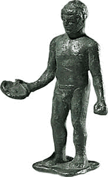

Day 1: Sacrifices to Zeus
Figurine of an athlete pouring a liquid offering After the athletes have sworn their oath, they make sacrifices to Zeus at one of the altars placed around the Altis. The only events today are for young athletes, between 12 and 18: these are running, wrestling and boxing. |
|
| back to day 1... | |